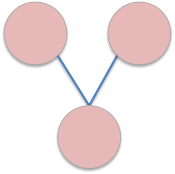

14.8. Database Scripts¶
This section details usage for scripts available in RMG-database/scripts folder.
14.8.1. evansPolanyi.py¶
This script will generate an Evans-Polanyi plot for a single kinetics depository.
Usage:
python evansPolanyi.py [-h] DEPOSITORY
Positional arguments:
DEPOSITORY the depository to use
Optional arguments:
-h, --help show help message and exit
14.8.2. exportKineticsLibraryToChemkin.py¶
This script exports an individual RMG-Py kinetics library to a chemkin and dictionary file. Thermo is taken from RMG’s estimates and libraries. In order to use more specific thermo, you must tweak the thermoLibraries and estimators in use when loading the database. The script will save the chem.inp and species_dictionary.txt files in the local directory.
Usage:
python exportKineticsLibrarytoChemkin.py [-h] LIBRARYNAME
Positional arguments:
LIBRARYNAME the libraryname of the RMG-Py format kinetics library
Optional arguments:
-h, --help show help message and exit
14.8.3. exportOldDatabase.py¶
This script exports the database to the old RMG-Java format. The script requires two command-line arguments: the path to the database to import, and the path to save the old RMG-Java database to.
Usage:
python exportOldDatabase.py OUTPUT
Positional arguments:
OUTPUT path to the directory where the RMG-Java database should be saved
14.8.4. importChemkinLibrary.py¶
This script imports a chemkin file (along with RMG dictionary) from a local directory and saves a set of RMG-Py kinetics library and thermo library files. These py files are automatically added to the input/kinetics/libraries and input/thermo/libraries folder under the user-specified name for the chemkin library.
Usage:
python importChemkinLibrary.py [-h] CHEMKIN DICTIONARY NAME
Positional arguments:
CHEMKIN The path of the chemkin file
DICTIONARY The path of the RMG dictionary file
NAME Name of the chemkin library to be saved
Optional arguments:
-h, --help show help message and exit
14.8.5. importJavaKineticsLibrary.py¶
This script imports an individual RMG-Java kinetics library from a local directory and saves the output kinetics library py file into a path of the user’s choosing. This library will be automatically added to the ‘libraryname’ folder in the input/kinetics/libraries directory and can be used directly as an RMG-Py kinetics library.
Usage:
python importJavaKineticsLibrary.py [-h] INPUT LIBRARYNAME
Positional arguments:
INPUT the input path of the RMG-Java kinetics library directory
LIBRARYNAME the libraryname for the RMG-Py format kinetics library
Optional arguments:
-h, --help show help message and exit
14.8.6. importJavaThermoLibrary.py¶
This script imports an individual RMG-Java themo library from a local directory and saves the output thermo library py file into a path of the user’s choosing. This library will be automatically saved to libraryname.py in the input/thermo/libraries directory and can be used directly as an RMG-Py thermo library.
Usage:
python importJavaThermoLibrary.py [-h] INPUT LIBRARYNAME
Positional arguments:
INPUT the input path of the RMG-Java thermo library directory
LIBRARYNAME the libraryname for the RMG-Py format thermo library
Optional arguments:
-h, --help show help message and exit
14.8.7. importOldDatabase.py¶
This script imports an RMG-Java database from the output directory and saves it in the input directory. Only recommended for use in extreme circumstances.
Usage:
python importOldDatabase.py [-h] INPUT OUTPUT
Positional arguments:
INPUT the input path of the RMG-Java database directory
LIBRARYNAME output path for the desired RMG-Py database directory
Optional arguments:
-h, --help show help message and exit
Table Of Contents
Edit this page
|
Learn more about the RMG software
| |
|
|
Browse the RMG database of chemical parameters
|
|
Online form for making an RMG input file
| |
|  |
Draw a group structure from its adjlist
|
|
|
Draw a molecule from its adjlist and search its properties
|
|
|
Search for the kinetics of a chemical reaction
|
|
|
Search for the solvation properties of a reaction between a solvent and a solute
|
|
|
CanTherm pdep calculations
|
|
|
Additional tools to supplement RMG
|